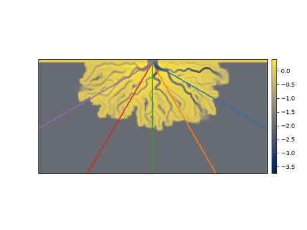
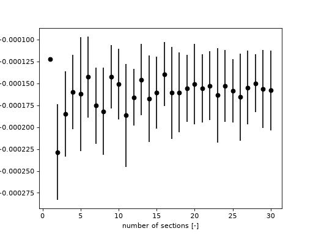
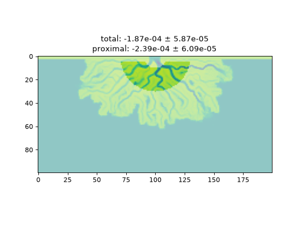

Radially-averaged topset slope¶
The topset slope of fan or delta can be challenging to quantify, due to the axis-symmetric nature of sedimentary fans, and variability in the surface elevation across the fan.
sandplover implements a metric compute_topset_slope to make this easier.
Number of RadialSection¶
See the effect of an increasing number of RadialSection objects used in the computation.
golf = spl.sample_data.golf()
origin = (
np.array([golf.meta["L0"].data, golf.meta["CTR"].data]) * golf.meta["dx"].data
)
# make a map with just five sections to see how this would look
from sandplover.plan import _determine_equally_spaced_azimuths
azimuths = _determine_equally_spaced_azimuths(num=5)
fig, ax = plt.subplots()
golf.quick_show("eta", idx=-1)
for a, azimuth in enumerate(azimuths):
a_section = spl.section.RadialSection(
golf["eta"][-1, :, :],
azimuth=azimuth,
origin=origin,
)
a_section.show_trace(ax=ax)
plt.show()
(Source code, png, hires.png)
{kind=link}
{kind=link}

nums = np.arange(1, 31)
means = np.zeros(len(nums))
stds = np.zeros(len(nums))
for i, num in enumerate(nums):
means[i], stds[i] = spl.plan.compute_topset_slope(
golf["eta"][-1, :, :], num=num,
origin=origin
)
fig, ax = plt.subplots()
ax.errorbar(nums, means, yerr=stds, marker="none", linestyle="none", color="k")
ax.plot(nums, means, marker="o", linestyle="none", color="k")
ax.set_xlabel('number of sections [-]')
ax.set_ylabel('topset slope [-]')
plt.show()
(Source code, png, hires.png)
{kind=link}
{kind=link}

Limit the computation to a proximal region of the delta¶
# make a copy of the elevation data
elevation = golf["eta"][-1, :, :].copy()
# compute the slope over the full topset
mean_full, std_full = spl.plan.compute_topset_slope(
elevation, origin=origin
)
# set up a proximal mask
proximal_mask = spl.mask.GeometricMask(golf["eta"][-1, :, :])
proximal_mask.circular(rad1=10, rad2=30)
proximal_mask.trim_mask(length=5)
# replace the unmasked data with nan, compute
elevation.data[~proximal_mask.mask] = np.nan
mean_prox, std_prox = spl.plan.compute_topset_slope(
elevation, origin=origin
)
fig, ax = plt.subplots()
ax.imshow(golf["eta"][-1], vmin=-5, vmax=1, alpha=0.5)
ax.imshow(elevation, vmin=-5, vmax=1, alpha=1)
ax.set_title(
f"total: {mean_full:.2e} $\\pm$ {std_full:.2e}\n"
f"proximal: {mean_prox:.2e} $\\pm$ {std_prox:.2e}"
)
plt.show()
(Source code, png, hires.png)
{kind=link}
{kind=link}
